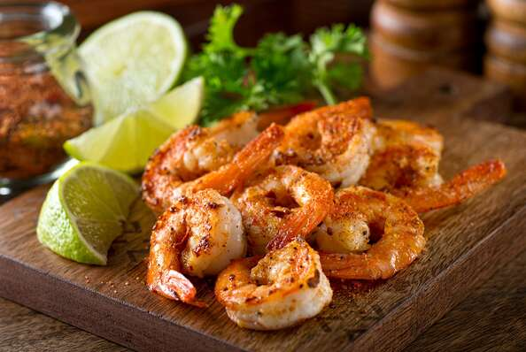

Cajun Shrimp

Description
Shrimp seasoned with paprika, thyme, oregano, garlic, and red pepper.
Ingredients
- paprika
- dried thyme
- dried oregano
- garlic powder
- salt
- ground black pepper
- cayenne pepper
- large shrimp
Steps
- Combine paprika, thyme, oregano, garlic powder, salt, pepper, and cayenne pepper in a sealable plastic bag; shake to mix. Add shrimp and shake to coat.
- Heat oil in a large non-stick skillet over medium high heat. Cook and stir shrimp in hot oil until they are bright pink on the outside and the meat is no longer transparent in the center, about 4 minutes.